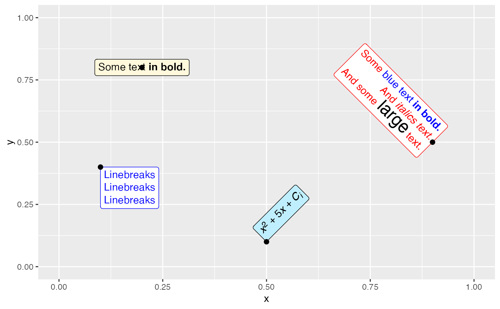
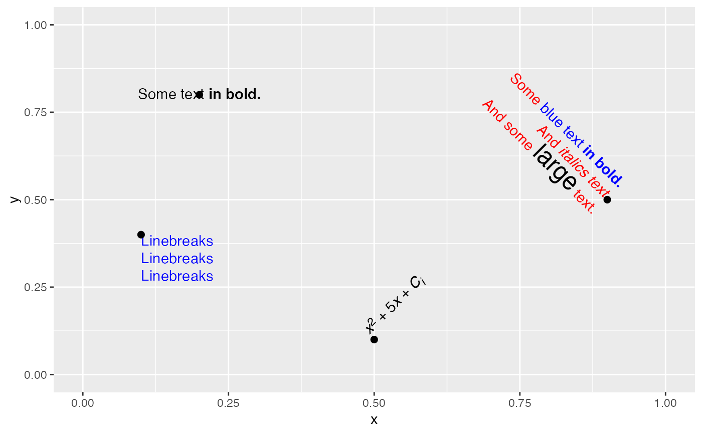

This geom draws text labels similar to ggplot2::geom_label(), but formatted
using basic markdown/html. Parameter and aesthetic names follow the conventions
of ggplot2::geom_label(), and therefore the appearance of the frame around
the label is controlled with label.colour, label.padding, label.margin,
label.size, label.r, even though the same parameters are called box.colour,
box.padding, box.margin, box.size, and box.r in geom_textbox(). Most
styling parameters can be used as aesthetics and can be applied separately to
each text label drawn. The exception is styling parameters that are specified
as grid units (e.g., label.padding or label.r), which can only be specified
for all text labels at once. See examples for details.
geom_richtext( mapping = NULL, data = NULL, stat = "identity", position = "identity", ..., nudge_x = 0, nudge_y = 0, label.padding = unit(c(0.25, 0.25, 0.25, 0.25), "lines"), label.margin = unit(c(0, 0, 0, 0), "lines"), label.r = unit(0.15, "lines"), na.rm = FALSE, show.legend = NA, inherit.aes = TRUE )
| mapping | Set of aesthetic mappings created by |
|---|---|
| data | The data to be displayed in this layer. There are three options: If A A |
| stat | The statistical transformation to use on the data for this layer, as a string. |
| position | Position adjustment, either as a string, or the result of
a call to a position adjustment function. Cannot be jointy specified with
|
| ... | Other arguments passed on to |
| nudge_x | Horizontal and vertical adjustment to nudge labels by.
Useful for offsetting text from points, particularly on discrete scales.
Cannot be jointly specified with |
| nudge_y | Horizontal and vertical adjustment to nudge labels by.
Useful for offsetting text from points, particularly on discrete scales.
Cannot be jointly specified with |
| label.padding | Amount of padding around label. Defaults to 0.25 lines. |
| label.margin | Unit vector of length four specifying the margin outside the text label. |
| label.r | Radius of rounded corners. Defaults to 0.15 lines. |
| na.rm | If |
| show.legend | logical. Should this layer be included in the legends?
|
| inherit.aes | If |
A ggplot2 layer that can be added to a plot created with
ggplot2::ggplot().
geom_richtext() understands the following aesthetics (required
aesthetics are in bold; select aesthetics are annotated):
x
y
label
alpha
angle
colour Default color of label text and label outline.
family
fontface
fill Default fill color of label background.
group
hjust
label.colour Color of label outline. Overrides colour.
label.size Width of label outline.
lineheight
size Default font size of label text.
text.colour Color of label text. Overrides colour.
vjust
library(ggplot2) df <- data.frame( label = c( "Some text **in bold.**", "Linebreaks<br>Linebreaks<br>Linebreaks", "*x*<sup>2</sup> + 5*x* + *C*<sub>*i*</sub>", "Some <span style='color:blue'>blue text **in bold.**</span><br>And *italics text.*<br> And some <span style='font-size:18pt; color:black'>large</span> text." ), x = c(.2, .1, .5, .9), y = c(.8, .4, .1, .5), hjust = c(0.5, 0, 0, 1), vjust = c(0.5, 1, 0, 0.5), angle = c(0, 0, 45, -45), color = c("black", "blue", "black", "red"), fill = c("cornsilk", "white", "lightblue1", "white") ) ggplot(df) + aes( x, y, label = label, angle = angle, color = color, fill = fill, hjust = hjust, vjust = vjust ) + geom_richtext() + geom_point(color = "black", size = 2) + scale_color_identity() + scale_fill_identity() + xlim(0, 1) + ylim(0, 1)# labels without frame or background are also possible ggplot(df) + aes( x, y, label = label, angle = angle, color = color, hjust = hjust, vjust = vjust ) + geom_richtext( fill = NA, label.color = NA, # remove background and outline label.padding = grid::unit(rep(0, 4), "pt") # remove padding ) + geom_point(color = "black", size = 2) + scale_color_identity() + xlim(0, 1) + ylim(0, 1)